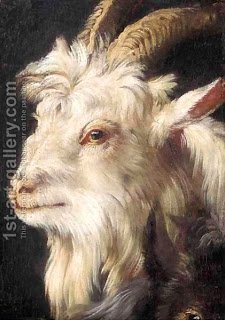

Yoma 41 - A strip of red wool
The two goats having been designated earlier, the High Priest now ties a strip of red wool on the horns of the goat designated to be sent to Azazel, and positions this goat next to the eastern gate ( Gate of Nikanor ), through which it will be sent. The goat that stands to be slaughtered he positions opposite the place of slaughter.
The last words "opposite a place of slaughtered" are intentionally ambiguous: it may mean next to the area where it is slaughtered, or it may mean that the strip of wool is tied next to the place of the cut in slaughter. The Talmud concludes that it is the latter; this was done so that the High Priest can tell this goat apart from all the other ones.
There were two strips of red wool: one here, on Yom Kippur, and another was thrown into the fire while burning the red heifer. Rabbi Yitzhak said that he heard from his teachers that one of them had a minimal weight, while the other one did not, but he did not remember which one. On the one hand, the Yom Kippur strip was cut in pieces, with one piece remaining on the horns of the goat, and the other placed for observation in the Temple. When the remaining piece became white, people knew that they were forgiven. So it is reasonable to say that this strip needed to have at least some weight. On the other hand, the one thrown in the fire had to land inside of it, not be burned on first contact, so maybe it needed to be heavy. This remains unresolved.
Art: A Study For The Head Of A Goat by (after) Philipp Peter Roos